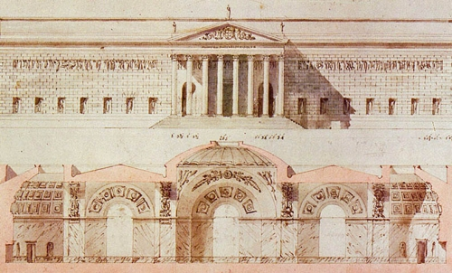
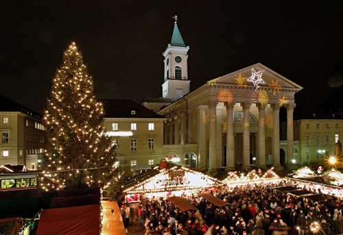
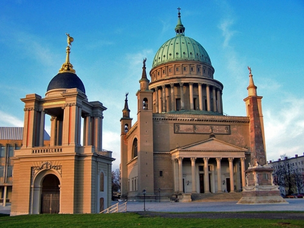
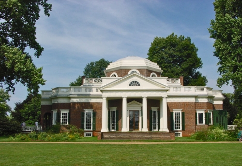

Классицизм в архитектуре – это стиль, в основе которого лежат нормы и традиции античности. Для этого стиля характерны строгие линии и формы, симметрия фасадов, ордерная система, архитектурные элементы: колонны, полуколонны, треугольные фронтоны, барельефы в круглых медальонах, статуи, в том числе кариатиды и атланты, ротонды на крыше. Архитектурный стиль классицизм стал отражением общественной мысли прогрессивных европейцев 18-го века. Иоганн Иоахим Винкельманн (Johann Joachim Winckelmann, немецкий искусствовед. 1717 -1768 гг.) писал в 1755 г, что подражание древним – единственный путь стать великими, и этот призыв нашел активную поддержку среди деятелей искусства. Подражательство древним грекам нашло свое отражение в работах К.Ф. Шинкеля (Karl Friedrich Schinkel немецкий архитектор. 1781- 1841гг.), Лео фон Кленце (Leo von Klenze. немецкий архитектор, основатель стиля «неогрек». 1784 – 1864 гг.). Их сооружения украсились колоннами и треугольными фасадами и стали объектом подражания их современников - зодчих.

Черты античности придавали постройкам благородную простоту и величие. Если в Древней Греции ордерная система использовалась только для строительства храмовых сооружений, то в Европе 18-19 вв. в стиле классицизм возводились дворцы, резиденции: Марктплац (Marktplatz - торговая площадь) в Карлсруэ, Максимилианштадт (Maksimilianshtadt), Людвигштрассе (Ludwigstrasse) в Мюнхене, сооружения в Дармштадте. Стиль классицизм в архитектуре отразился в строениях Берлина и Потсдама.

В этом стиле стали возводить не только дворцы знати, черты классицизма появились в загородных домах, театрах, университетах, больницах, музеях, общественных библиотеках. Элементы классики использовались при строительстве городских зданий общественного назначения: ратуши, школы, воспитательные дома, пансионы. Даже тюрьмы и казармы приобрели классический вид. Архитектурный стиль классицизм оказался спорным при возведении храмовых сооружений, так как священнослужители не могли определиться, подходят ли идеи античности христианским догмам. Однако, в Карлсруэ, Потсдаме, Дармштадте, тем не менее, были возведены церкви с элементами античности.

В 19 веке развитие архитектуры начинает ускоряться. Циклическое развитие архитектуры предполагало длительный по времени переход от простых форм к сложным – так барокко, появившееся после простых форм Ренессанса, формировалось не один десяток лет, и властвовало в архитектурной моде несколько веков. При этом возврат к простым формам и структурам требовал гораздо меньше времени. Классицизм в архитектуре сформировался в Европе и покорил Америку менее чем за сто лет. Примером может служить дом в Монтичелло, Шарлотсвилль. Строительство дома было начато хозяином, поклонником Андреа Палладио - Томасом Джефферсоном в 1769 г. Спустя 11 лет Джефферсон стал последователем другого направления - французского классицизма, и перестроил большую часть здания.

Архитектурный классицизм достиг своей вершины во Франции, Германии, России, Англии. Классицизм в архитектуре пришел на смену придворному барокко и рококо вместе с буржуазными революциями – английская произошла в 1688 г, а французская, спустя век. Он завоевал свои позиции благодаря идейному наполнению, которое отвечало требованиям времени. Античные структуры, пропорции и формы наполнились новым содержанием, их ясная и четкая эстетика ставилась в противовес неопределенности и давящей масштабности барокко, излишней слащавости рококо, характерных для бездельничающей европейской аристократии в противовес новому классу – буржуазии, не имеющей аристократических корней и стремящейся создать собственный слой культуры. Идеи просвещения, которые захватили европейское передовое общество, отразились в архитектуре, привлекающей своей простотой, строгостью и основанной на античности.